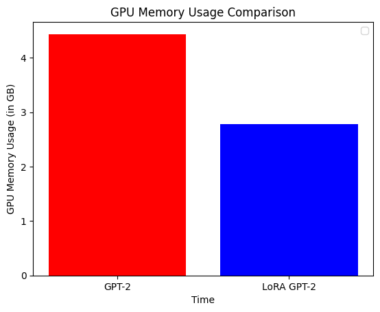

Parameter-efficient fine-tuning of GPT-2 with LoRA
Author: Abheesht Sharma, Matthew Watson
Date created: 2023/05/27
Last modified: 2023/05/27
Description: Use KerasHub to fine-tune a GPT-2 LLM with LoRA.

Introduction
Large Language Models (LLMs) have been shown to be effective at a variety of NLP tasks. An LLM is first pre-trained on a large corpus of text in a self-supervised fashion. Pre-training helps LLMs learn general-purpose knowledge, such as statistical relationships between words. An LLM can then be fine-tuned on a downstream task of interest (such as sentiment analysis).
However, LLMs are extremely large in size, and we don't need to train all the parameters in the model while fine-tuning, especially because datasets on which the model is fine-tuned are relatively small. Another way of saying this is that LLMs are over-parametrized for fine-tuning. This is where Low-Rank Adaptation (LoRA) comes in; it significantly reduces the number of trainable parameters. This results in a decrease in training time and GPU memory usage, while maintaining the quality of the outputs.
In this example, we will explain LoRA in technical terms, show how the technical explanation translates to code, hack KerasHub's GPT-2 model and fine-tune it on the next token prediction task using LoRA. We will compare LoRA GPT-2 with a fully fine-tuned GPT-2 in terms of the quality of the generated text, training time and GPU memory usage.
Note: This example runs on the TensorFlow backend purely for the
tf.config.experimental.get_memory_info API to easily plot memory usage.
Outside of the memory usage callback, this example will run on jax and torch
backends.
Setup
Before we start implementing the pipeline, let's install and import all the libraries we need. We'll be using the KerasHub library.
Secondly, let's enable mixed precision training. This will help us reduce the training time.
!pip install -q --upgrade keras-hub
!pip install -q --upgrade keras # Upgrade to Keras 3.
import os
os.environ["KERAS_BACKEND"] = "tensorflow"
import keras_hub
import keras
import matplotlib.pyplot as plt
import tensorflow as tf
import tensorflow_datasets as tfds
import time
keras.mixed_precision.set_global_policy("mixed_float16")
Let's also define our hyperparameters.
# General hyperparameters
BATCH_SIZE = 32
NUM_BATCHES = 500
EPOCHS = 1 # Can be set to a higher value for better results
MAX_SEQUENCE_LENGTH = 128
MAX_GENERATION_LENGTH = 200
GPT2_PRESET = "gpt2_base_en"
# LoRA-specific hyperparameters
RANK = 4
ALPHA = 32.0
Dataset
Let's load a Reddit dataset. We will fine-tune both the GPT-2 model and the LoRA GPT-2 model on a subset of this dataset. The aim is to produce text similar in style to Reddit posts.
reddit_ds = tfds.load("reddit_tifu", split="train", as_supervised=True)
The dataset has two fields: document and title.
for document, title in reddit_ds:
print(document.numpy())
print(title.numpy())
break
b"me and a friend decided to go to the beach last sunday. we loaded up and headed out. we were about half way there when i decided that i was not leaving till i had seafood. \n\nnow i'm not talking about red lobster. no friends i'm talking about a low country boil. i found the restaurant and got directions. i don't know if any of you have heard about the crab shack on tybee island but let me tell you it's worth it. \n\nwe arrived and was seated quickly. we decided to get a seafood sampler for two and split it. the waitress bought it out on separate platters for us. the amount of food was staggering. two types of crab, shrimp, mussels, crawfish, andouille sausage, red potatoes, and corn on the cob. i managed to finish it and some of my friends crawfish and mussels. it was a day to be a fat ass. we finished paid for our food and headed to the beach. \n\nfunny thing about seafood. it runs through me faster than a kenyan \n\nwe arrived and walked around a bit. it was about 45min since we arrived at the beach when i felt a rumble from the depths of my stomach. i ignored it i didn't want my stomach to ruin our fun. i pushed down the feeling and continued. about 15min later the feeling was back and stronger than before. again i ignored it and continued. 5min later it felt like a nuclear reactor had just exploded in my stomach. i started running. i yelled to my friend to hurry the fuck up. \n\nrunning in sand is extremely hard if you did not know this. we got in his car and i yelled at him to floor it. my stomach was screaming and if he didn't hurry i was gonna have this baby in his car and it wasn't gonna be pretty. after a few red lights and me screaming like a woman in labor we made it to the store. \n\ni practically tore his car door open and ran inside. i ran to the bathroom opened the door and barely got my pants down before the dam burst and a flood of shit poured from my ass. \n\ni finished up when i felt something wet on my ass. i rubbed it thinking it was back splash. no, mass was covered in the after math of me abusing the toilet. i grabbed all the paper towels i could and gave my self a whores bath right there. \n\ni sprayed the bathroom down with the air freshener and left. an elderly lady walked in quickly and closed the door. i was just about to walk away when i heard gag. instead of walking i ran. i got to the car and told him to get the hell out of there."
b'liking seafood'
We'll now batch the dataset and retain only the document field because we are
fine-tuning the model on the next word prediction task. Take a subset
of the dataset for the purpose of this example.
train_ds = (
reddit_ds.map(lambda document, _: document)
.batch(BATCH_SIZE)
.cache()
.prefetch(tf.data.AUTOTUNE)
)
train_ds = train_ds.take(NUM_BATCHES)
Helper functions
Before we begin fine-tuning the models, let's define a few helper functions and classes.
Callback for tracking GPU memory usage
We'll define a custom callback function which tracks GPU memory usage. The
callback function uses TensorFlow's tf.config.experimental.get_memory_info
API.
Here, we assume that we are using a single GPU, GPU:0.
class GPUMemoryCallback(keras.callbacks.Callback):
def __init__(
self,
target_batches,
print_stats=False,
**kwargs,
):
super().__init__(**kwargs)
self.target_batches = target_batches
self.print_stats = print_stats
self.memory_usage = []
self.labels = []
def _compute_memory_usage(self):
memory_stats = tf.config.experimental.get_memory_info("GPU:0")
# Convert bytes to GB and store in list.
peak_usage = round(memory_stats["peak"] / (2**30), 3)
self.memory_usage.append(peak_usage)
def on_epoch_begin(self, epoch, logs=None):
self._compute_memory_usage()
self.labels.append(f"epoch {epoch} start")
def on_train_batch_begin(self, batch, logs=None):
if batch in self.target_batches:
self._compute_memory_usage()
self.labels.append(f"batch {batch}")
def on_epoch_end(self, epoch, logs=None):
self._compute_memory_usage()
self.labels.append(f"epoch {epoch} end")
Function for text generation
Here is a helper function to generate text.
def generate_text(model, input_text, max_length=200):
start = time.time()
output = model.generate(input_text, max_length=max_length)
print("\nOutput:")
print(output)
end = time.time()
print(f"Total Time Elapsed: {end - start:.2f}s")
Define optimizer and loss
We will use AdamW optimizer and cross-entropy loss for training both models.
def get_optimizer_and_loss():
optimizer = keras.optimizers.AdamW(
learning_rate=5e-5,
weight_decay=0.01,
epsilon=1e-6,
global_clipnorm=1.0, # Gradient clipping.
)
# Exclude layernorm and bias terms from weight decay.
optimizer.exclude_from_weight_decay(var_names=["bias"])
optimizer.exclude_from_weight_decay(var_names=["gamma"])
optimizer.exclude_from_weight_decay(var_names=["beta"])
loss = keras.losses.SparseCategoricalCrossentropy(from_logits=True)
return optimizer, loss
Fine-tune GPT-2
Let's load the model and preprocessor first. We use a sequence length of 128 instead of 1024 (which is the default sequence length). This will limit our ability to predict long sequences, but will allow us to run this example quickly on Colab.
preprocessor = keras_hub.models.GPT2CausalLMPreprocessor.from_preset(
"gpt2_base_en",
sequence_length=MAX_SEQUENCE_LENGTH,
)
gpt2_lm = keras_hub.models.GPT2CausalLM.from_preset(
"gpt2_base_en", preprocessor=preprocessor
)
gpt2_lm.summary()
Preprocessor: "gpt2_causal_lm_preprocessor"
┏━━━━━━━━━━━━━━━━━━━━━━━━━━━━━━━━━━━━━━━━━━━━━━━━━━━━┳━━━━━━━━━━━━━━━━━━━━━━━━━━━━━━━━━━━━━━━━━━━━━━━━━━━━━┓ ┃ Tokenizer (type) ┃ Vocab # ┃ ┡━━━━━━━━━━━━━━━━━━━━━━━━━━━━━━━━━━━━━━━━━━━━━━━━━━━━╇━━━━━━━━━━━━━━━━━━━━━━━━━━━━━━━━━━━━━━━━━━━━━━━━━━━━━┩ │ gpt2_tokenizer (GPT2Tokenizer) │ 50,257 │ └────────────────────────────────────────────────────┴─────────────────────────────────────────────────────┘
Model: "gpt2_causal_lm"
┏━━━━━━━━━━━━━━━━━━━━━━━━━━━━━━━┳━━━━━━━━━━━━━━━━━━━━━━━━━━━┳━━━━━━━━━━━━━┳━━━━━━━━━━━━━━━━━━━━━━━━━━━━━━━━┓ ┃ Layer (type) ┃ Output Shape ┃ Param # ┃ Connected to ┃ ┡━━━━━━━━━━━━━━━━━━━━━━━━━━━━━━━╇━━━━━━━━━━━━━━━━━━━━━━━━━━━╇━━━━━━━━━━━━━╇━━━━━━━━━━━━━━━━━━━━━━━━━━━━━━━━┩ │ padding_mask (InputLayer) │ (None, None) │ 0 │ - │ ├───────────────────────────────┼───────────────────────────┼─────────────┼────────────────────────────────┤ │ token_ids (InputLayer) │ (None, None) │ 0 │ - │ ├───────────────────────────────┼───────────────────────────┼─────────────┼────────────────────────────────┤ │ gpt2_backbone (GPT2Backbone) │ (None, None, 768) │ 124,439,808 │ padding_mask[0][0], │ │ │ │ │ token_ids[0][0] │ ├───────────────────────────────┼───────────────────────────┼─────────────┼────────────────────────────────┤ │ token_embedding │ (None, None, 50257) │ 38,597,376 │ gpt2_backbone[0][0] │ │ (ReversibleEmbedding) │ │ │ │ └───────────────────────────────┴───────────────────────────┴─────────────┴────────────────────────────────┘
Total params: 124,439,808 (474.70 MB)
Trainable params: 124,439,808 (474.70 MB)
Non-trainable params: 0 (0.00 B)
Initialize the GPU memory tracker callback object, and compile the model. We use the Adam optimizer with a linearly decaying learning rate.
gpu_memory_callback = GPUMemoryCallback(
target_batches=[5, 10, 25, 50, 100, 150, 200, 300, 400, 500],
print_stats=True,
)
optimizer, loss = get_optimizer_and_loss()
gpt2_lm.compile(
optimizer=optimizer,
loss=loss,
weighted_metrics=["accuracy"],
)
We are all set to train the model!
gpt2_lm.fit(train_ds, epochs=EPOCHS, callbacks=[gpu_memory_callback])
gpt2_lm_memory_usage = gpu_memory_callback.memory_usage
WARNING: All log messages before absl::InitializeLog() is called are written to STDERR
I0000 00:00:1701128462.076856 38706 device_compiler.h:186] Compiled cluster using XLA! This line is logged at most once for the lifetime of the process.
W0000 00:00:1701128462.146837 38706 graph_launch.cc:671] Fallback to op-by-op mode because memset node breaks graph update
500/500 ━━━━━━━━━━━━━━━━━━━━ 114s 128ms/step - accuracy: 0.3183 - loss: 3.3682
As a final step, let's generate some text. We will harness the power of XLA. The
first call to generate() will be slow because of XLA compilation, but
subsequent calls will be super-fast. :)
generate_text(gpt2_lm, "I like basketball", max_length=MAX_GENERATION_LENGTH)
generate_text(gpt2_lm, "That Italian restaurant is", max_length=MAX_GENERATION_LENGTH)
Output:
I like basketball, but this one actually happened a few months ago.
i was on my way to a party in the city when i noticed a group of guys were playing basketball. one of my friends, a guy named "jenny," was playing. jenny's mom, a very nice girl, was sitting on her couch.
jenny and jenny were sitting in a circle around her, and i started to play some of my favorite basketball games. i got to the end of the circle and jenny started to run. i didn't know how jenny was doing. she ran, but it
Total Time Elapsed: 6.66s
Output:
That Italian restaurant is a bit of a mystery, because the place is closed.
so i was at my friends house and i went to grab some food, so i got the usual pizza and some chicken, but it wasn't really the pizza, so i just grabbed my friend's pizza.
i had a lot of chicken, but i was hungry, so i decided to grab a few of the other pizza's that were already in there.
i was eating the pizza with some friends and i was eating the pizza and then i got a knock on the door.
the guy in front of me is
Total Time Elapsed: 0.22s
LoRA GPT-2
In this section, we discuss the technical details of LoRA, build a LoRA GPT-2 model, fine-tune it and generate text.
What exactly is LoRA?
LoRA is a parameter-efficient fine-tuning technique for LLMs. It freezes the weights of the LLM, and injects trainable rank-decomposition matrices. Let's understand this more clearly.
Assume we have an n x n pre-trained dense layer (or weight matrix), W0. We
initialize two dense layers, A and B, of shapes n x rank, and rank x n,
respectively. rank is much smaller than n. In the paper, values between 1
and 4 are shown to work well.
LoRA equation
The original equation is output = W0x + b0, where x is the input, W0 and
b0 are the weight matrix and bias terms of the original dense layer (frozen).
The LoRA equation is: output = W0x + b0 + BAx, where A and B are the
rank-decomposition matrices.
LoRA is based on the idea that updates to the weights of the pre-trained
language model have a low "intrinsic rank" since pre-trained language models are
over-parametrized. Predictive performance of full fine-tuning can be replicated
even by constraining W0's updates to low-rank decomposition matrices.

Number of trainable parameters
Let's do some quick math. Suppose n is 768, and rank is 4. W0 has
768 x 768 = 589,824 parameters, whereas the LoRA layers, A and B together
have 768 x 4 + 4 x 768 = 6,144 parameters. So, for the dense layer, we go from
589,824 trainable parameters to 6,144 trainable parameters!
Why does LoRA reduce memory footprint?
Even though the total number of parameters increase (since we are adding LoRA layers), the memory footprint reduces, because the number of trainable parameters reduces. Let's dive deeper into this.
The memory usage of a model can be split into four parts:
- Model memory: This is the memory required to store the model weights. This will be slightly higher for LoRA than GPT-2.
- Forward pass memory: This mostly depends on batch size, sequence length, etc. We keep this constant for both models for a fair comparison.
- Backward pass memory: This is the memory required to store the gradients. Note that the gradients are computed only for the trainable parameters.
- Optimizer memory: This is the memory required to store the optimizer state. For example, the Adam optimizer stores the "1st moment vectors" and "2nd moment vectors" for the trainable parameters.
Since, with LoRA, there is a huge reduction in the number of trainable parameters, the optimizer memory and the memory required to store the gradients for LoRA is much less than GPT-2. This is where most of the memory savings happen.
Why is LoRA so popular?
- Reduces GPU memory usage;
- Faster training; and
- No additional inference latency.
Create LoRA layer
According to the technical description above, let's create a LoRA layer. In
a transformer model, the LoRA layer is created and injected for the query and
value projection matrices. In keras.layers.MultiHeadAttention, the query/value
projection layers are keras.layers.EinsumDense layers.
import math
class LoraLayer(keras.layers.Layer):
def __init__(
self,
original_layer,
rank=8,
alpha=32,
trainable=False,
**kwargs,
):
# We want to keep the name of this layer the same as the original
# dense layer.
original_layer_config = original_layer.get_config()
name = original_layer_config["name"]
kwargs.pop("name", None)
super().__init__(name=name, trainable=trainable, **kwargs)
self.rank = rank
self.alpha = alpha
self._scale = alpha / rank
self._num_heads = original_layer_config["output_shape"][-2]
self._hidden_dim = self._num_heads * original_layer_config["output_shape"][-1]
# Layers.
# Original dense layer.
self.original_layer = original_layer
# No matter whether we are training the model or are in inference mode,
# this layer should be frozen.
self.original_layer.trainable = False
# LoRA dense layers.
self.A = keras.layers.Dense(
units=rank,
use_bias=False,
# Note: the original paper mentions that normal distribution was
# used for initialization. However, the official LoRA implementation
# uses "Kaiming/He Initialization".
kernel_initializer=keras.initializers.VarianceScaling(
scale=math.sqrt(5), mode="fan_in", distribution="uniform"
),
trainable=trainable,
name=f"lora_A",
)
# B has the same `equation` and `output_shape` as the original layer.
# `equation = abc,cde->abde`, where `a`: batch size, `b`: sequence
# length, `c`: `hidden_dim`, `d`: `num_heads`,
# `e`: `hidden_dim//num_heads`. The only difference is that in layer `B`,
# `c` represents `rank`.
self.B = keras.layers.EinsumDense(
equation=original_layer_config["equation"],
output_shape=original_layer_config["output_shape"],
kernel_initializer="zeros",
trainable=trainable,
name=f"lora_B",
)
def call(self, inputs):
original_output = self.original_layer(inputs)
if self.trainable:
# If we are fine-tuning the model, we will add LoRA layers' output
# to the original layer's output.
lora_output = self.B(self.A(inputs)) * self._scale
return original_output + lora_output
# If we are in inference mode, we "merge" the LoRA layers' weights into
# the original layer's weights - more on this in the text generation
# section!
return original_output
Inject LoRA layer into the model
We will now hack the original GPT-2 model and inject LoRA layers into it. Let's do a couple of things before doing that:
- Delete previous model;
- Reset "peak" GPU memory usage using
tf.config.experimental.reset_memory_stats; - Load a new GPT-2 model.
del gpt2_lm
del optimizer
del loss
# This resets "peak" memory usage to "current" memory usage.
tf.config.experimental.reset_memory_stats("GPU:0")
# Load the original model.
preprocessor = keras_hub.models.GPT2CausalLMPreprocessor.from_preset(
"gpt2_base_en",
sequence_length=128,
)
lora_model = keras_hub.models.GPT2CausalLM.from_preset(
"gpt2_base_en",
preprocessor=preprocessor,
)
We will now override the original query/value projection matrices with our new LoRA layers.
for layer_idx in range(lora_model.backbone.num_layers):
# Change query dense layer.
decoder_layer = lora_model.backbone.get_layer(f"transformer_layer_{layer_idx}")
self_attention_layer = decoder_layer._self_attention_layer
# Allow mutation to Keras layer state.
self_attention_layer._tracker.locked = False
# Change query dense layer.
self_attention_layer._query_dense = LoraLayer(
self_attention_layer._query_dense,
rank=RANK,
alpha=ALPHA,
trainable=True,
)
# Change value dense layer.
self_attention_layer._value_dense = LoraLayer(
self_attention_layer._value_dense,
rank=RANK,
alpha=ALPHA,
trainable=True,
)
Let's now do a forward pass to make sure we still have a valid chain of computation.
lora_model(preprocessor(["LoRA is very useful for quick LLM finetuning"])[0])
pass
Freeze the entire LLM, only the LoRA layers should be trainable.
for layer in lora_model._flatten_layers():
lst_of_sublayers = list(layer._flatten_layers())
if len(lst_of_sublayers) == 1: # "leaves of the model"
if layer.name in ["lora_A", "lora_B"]:
layer.trainable = True
else:
layer.trainable = False
Print the model's summary and see if the number of non-trainable parameters and total parameters are correct.
In a previous section, we had calculated the number of parameters associated with
the LoRA layers to be 6,144. The total trainable parameters in the model should
be num_layers * (query, value) * 6,144 = 12 * 2 * 6,144 = 147,456. The
number of non-trainable parameters should be the same as the total number of
parameters in the original GPT-2 model, which is 124,439,808.
lora_model.summary()
Preprocessor: "gpt2_causal_lm_preprocessor_1"
┏━━━━━━━━━━━━━━━━━━━━━━━━━━━━━━━━━━━━━━━━━━━━━━━━━━━━┳━━━━━━━━━━━━━━━━━━━━━━━━━━━━━━━━━━━━━━━━━━━━━━━━━━━━━┓ ┃ Tokenizer (type) ┃ Vocab # ┃ ┡━━━━━━━━━━━━━━━━━━━━━━━━━━━━━━━━━━━━━━━━━━━━━━━━━━━━╇━━━━━━━━━━━━━━━━━━━━━━━━━━━━━━━━━━━━━━━━━━━━━━━━━━━━━┩ │ gpt2_tokenizer_1 (GPT2Tokenizer) │ 50,257 │ └────────────────────────────────────────────────────┴─────────────────────────────────────────────────────┘
Model: "gpt2_causal_lm_1"
┏━━━━━━━━━━━━━━━━━━━━━━━━━━━━━━━┳━━━━━━━━━━━━━━━━━━━━━━━━━━━┳━━━━━━━━━━━━━┳━━━━━━━━━━━━━━━━━━━━━━━━━━━━━━━━┓ ┃ Layer (type) ┃ Output Shape ┃ Param # ┃ Connected to ┃ ┡━━━━━━━━━━━━━━━━━━━━━━━━━━━━━━━╇━━━━━━━━━━━━━━━━━━━━━━━━━━━╇━━━━━━━━━━━━━╇━━━━━━━━━━━━━━━━━━━━━━━━━━━━━━━━┩ │ padding_mask (InputLayer) │ (None, None) │ 0 │ - │ ├───────────────────────────────┼───────────────────────────┼─────────────┼────────────────────────────────┤ │ token_ids (InputLayer) │ (None, None) │ 0 │ - │ ├───────────────────────────────┼───────────────────────────┼─────────────┼────────────────────────────────┤ │ gpt2_backbone_1 │ (None, None, 768) │ 124,587,264 │ padding_mask[0][0], │ │ (GPT2Backbone) │ │ │ token_ids[0][0] │ ├───────────────────────────────┼───────────────────────────┼─────────────┼────────────────────────────────┤ │ token_embedding │ (None, None, 50257) │ 38,597,376 │ gpt2_backbone_1[0][0] │ │ (ReversibleEmbedding) │ │ │ │ └───────────────────────────────┴───────────────────────────┴─────────────┴────────────────────────────────┘
Total params: 124,587,264 (475.26 MB)
Trainable params: 147,456 (576.00 KB)
Non-trainable params: 124,439,808 (474.70 MB)
Fine-tune LoRA GPT-2
Now that we have hacked and verified the LoRA GPT-2 model, let's train it!
gpu_memory_callback = GPUMemoryCallback(
target_batches=[5, 10, 25, 50, 100, 150, 200, 300, 400, 500],
print_stats=True,
)
optimizer, loss = get_optimizer_and_loss()
lora_model.compile(
optimizer=optimizer,
loss=loss,
weighted_metrics=["accuracy"],
)
lora_model.fit(
train_ds,
epochs=EPOCHS,
callbacks=[gpu_memory_callback],
)
lora_model_memory_usage = gpu_memory_callback.memory_usage
2/500 [37m━━━━━━━━━━━━━━━━━━━━ 41s 84ms/step - accuracy: 0.2828 - loss: 3.7188
W0000 00:00:1701128576.353742 38699 graph_launch.cc:671] Fallback to op-by-op mode because memset node breaks graph update
500/500 ━━━━━━━━━━━━━━━━━━━━ 80s 81ms/step - accuracy: 0.2930 - loss: 3.6158
And we are done fine-tuning the model! Before we generate text, let's compare the training time and memory usage of the two models. The training time of GPT-2 on a 16 GB Tesla T4 (Colab) is 7 minutes, and for LoRA, it is 5 minutes, a 30% decrease. The memory usage of LoRA GPT-2 is roughly 35% times less than GPT-2.
plt.bar(
["GPT-2", "LoRA GPT-2"],
[max(gpt2_lm_memory_usage), max(lora_model_memory_usage)],
color=["red", "blue"],
)
plt.xlabel("Time")
plt.ylabel("GPU Memory Usage (in GB)")
plt.title("GPU Memory Usage Comparison")
plt.legend()
plt.show()
WARNING:matplotlib.legend:No artists with labels found to put in legend. Note that artists whose label start with an underscore are ignored when legend() is called with no argument.

Merge weights and generate text!
One of the biggest advantages of LoRA over other adapter methods is that it does not incur any additional inference latency. Let's understand why.
Recall our LoRA equation: output = W0x + b0 + BAx. We can rewrite this as:
output = = Wx + b0 = (W0 + BA)x + b0, where W = W0 + BA. This means that if
we merge the weights of the original model and the adapter, we will be essentially
doing the same computation as the original model!
for layer_idx in range(lora_model.backbone.num_layers):
self_attention_layer = lora_model.backbone.get_layer(
f"transformer_layer_{layer_idx}"
)._self_attention_layer
# Merge query dense layer.
query_lora_layer = self_attention_layer._query_dense
A_weights = query_lora_layer.A.kernel # (768, 1) (a, b)
B_weights = query_lora_layer.B.kernel # (1, 12, 64) (b, c, d)
increment_weights = tf.einsum("ab,bcd->acd", A_weights, B_weights) * (ALPHA / RANK)
query_lora_layer.original_layer.kernel.assign_add(increment_weights)
# Merge value dense layer.
value_lora_layer = self_attention_layer._value_dense
A_weights = value_lora_layer.A.kernel # (768, 1) (a, b)
B_weights = value_lora_layer.B.kernel # (1, 12, 64) (b, c, d)
increment_weights = tf.einsum("ab,bcd->acd", A_weights, B_weights) * (ALPHA / RANK)
value_lora_layer.original_layer.kernel.assign_add(increment_weights)
# Put back in place the original layers with updated weights
self_attention_layer._query_dense = query_lora_layer.original_layer
self_attention_layer._value_dense = value_lora_layer.original_layer
We are now all set to generate text with our LoRA model :).
# Freezing weights not necessary during generation since no weights are updated.
generate_text(lora_model, "I like basketball", max_length=MAX_GENERATION_LENGTH)
generate_text(
lora_model, "That Italian restaurant is", max_length=MAX_GENERATION_LENGTH
)
Output:
I like basketball. i've played this game for about a week and i'm pretty tired. today, i'm playing with my friend, who is a really good player. i'm a little older than the average player and i'm a bit too young.
Total Time Elapsed: 6.81s
Output:
That Italian restaurant is in the city center and is located on a street that was recently renovated for the summer.
i was in a group of friends and had a great time.
Total Time Elapsed: 0.32s
And we're all done!